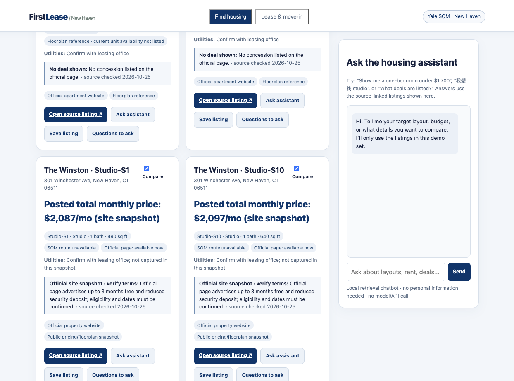
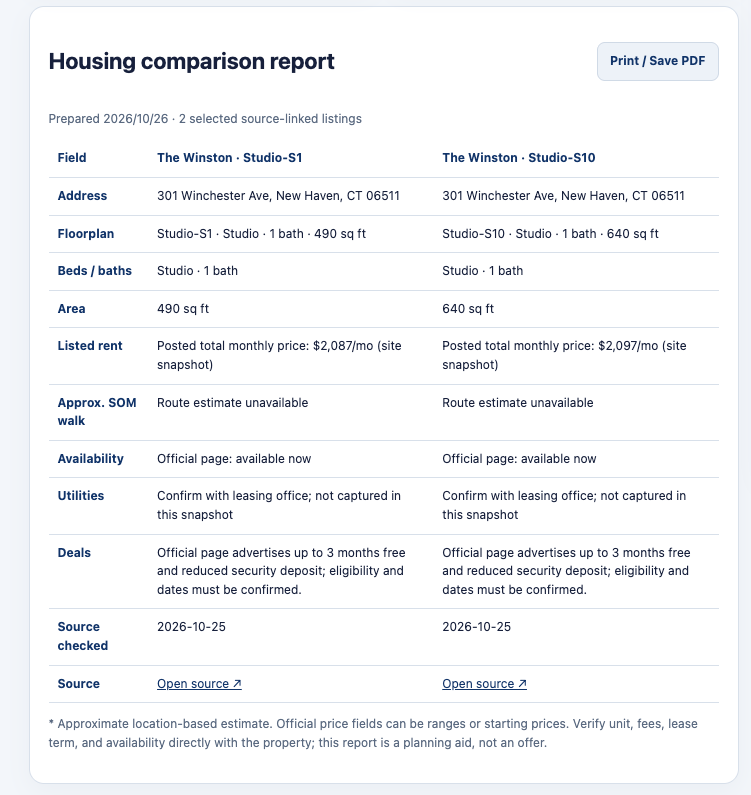
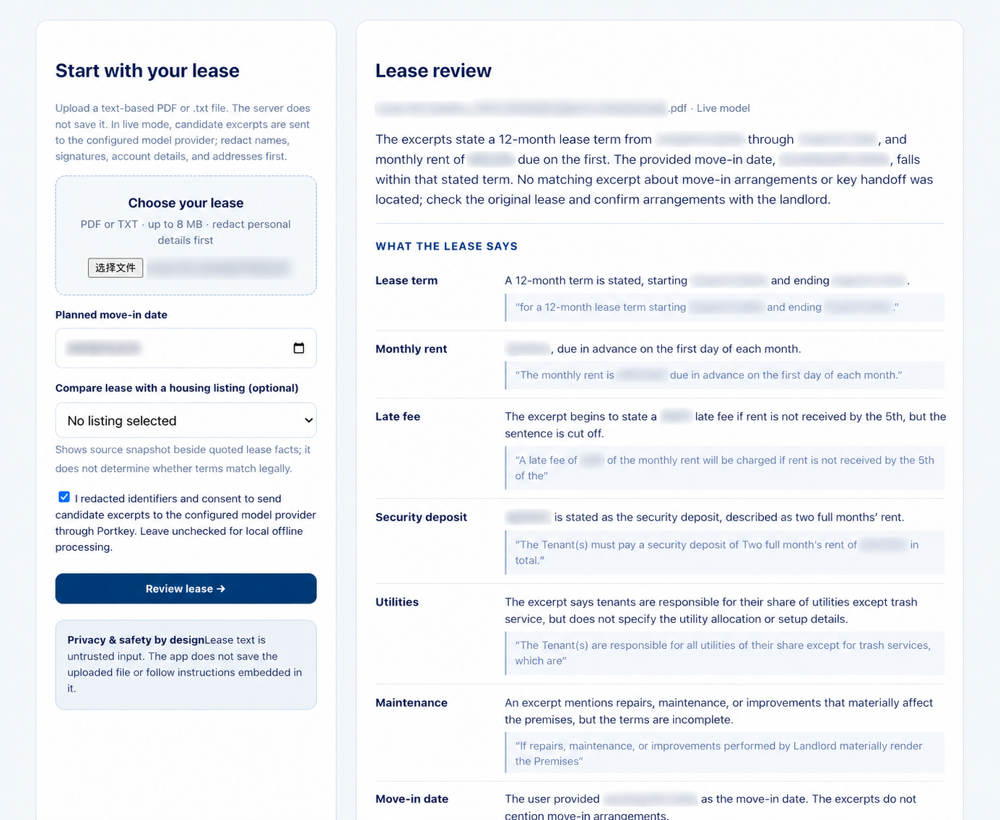
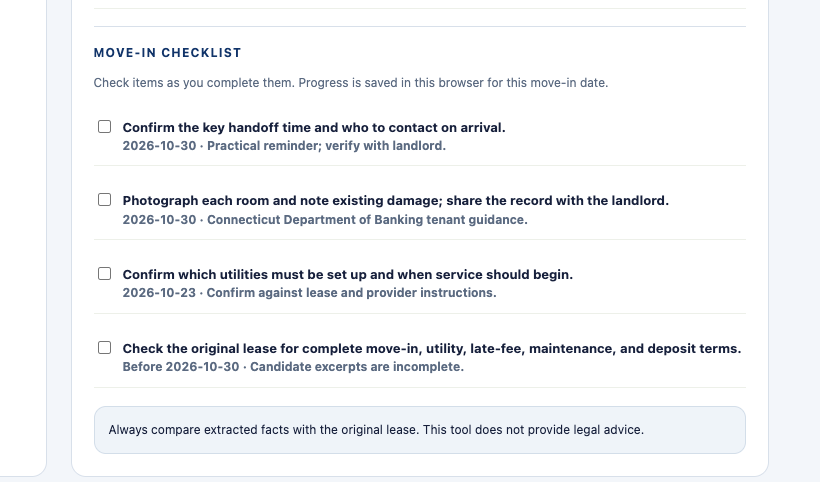

From SOM-centered search to a clearer move-in plan.
A source-linked housing comparison and lease-to-move-in assistant for students arriving in New Haven.
App link: local demo only; online deployment pending · GitHub: firstlease-new-haven
[ESTELA: If deployed, replace “local demo only” with the live URL. FirstLease organizes information; it does not verify housing, provide legal advice, or make decisions for a renter.]
International students arriving in New Haven may need to compare housing, understand an unfamiliar lease, coordinate utilities, arrange key pickup, and document the unit condition—often while working across a language and process gap. A missed detail can create avoidable stress or cost. FirstLease focuses on the transition from a signed or proposed lease to concrete questions and move-in preparation.
What does the lease actually say? What is unclear? What should I ask? What should I do before arrival?
One document, one move-in date, one evidence-linked review and checklist.
Yale provides an off-campus housing marketplace, an Off-Campus Living Guide, and housing information through OISS. Students can read their lease, search the guidance, ask a friend or landlord, and keep their own calendar reminders. That is useful material, but the student still has to connect a specific lease to a personal sequence of next steps.
Existing services already address important pieces. Yale’s Off-Campus Housing Marketplace helps users find and compare listings. Yale’s Off-Campus Living Guide and OISS housing pages explain renting concepts and local resources. General-purpose chat tools can summarize uploaded text. FirstLease combines a small source-linked housing snapshot with a renter’s own lease workflow: compare layouts and posted prices, extract a fact, show its source sentence, surface missing details, phrase a question, and schedule a practical reminder.
| Alternative | What it does | FirstLease’s distinction |
|---|---|---|
| Yale Off-Campus Housing Marketplace | Search and compare housing listings. | Pairs marketplace examples with selected official apartment floorplans and posted prices, then supports lease-to-move-in preparation. |
| Yale Off-Campus Living Guide / OISS | Explains housing terms, renting process, utilities, and local context. | Connects selected lease excerpts to individualized questions and a dated move-in checklist. |
| General AI chat (e.g., ChatGPT) | Can answer questions about pasted or uploaded text. | Uses a fixed schema, local evidence retrieval, explicit unknowns, bounded checklist, and visible token usage. |
The value is not that an LLM can paraphrase a lease. The product hypothesis is that students benefit when housing layouts, posted prices, and source links connect to lease facts, missing items become concrete questions, and next steps are attached to a date. That remains an unproven product hypothesis.
Sources: Yale Off-Campus Housing Marketplace · The Winston availability · The Archive pricing · The Audubon floorplans · Anthem Square 10 floorplans · 254 College Street · New Haven Towers floorplans (Madison Towers, Crown Towers, Crown Court, 18 High) · Twenty Fair current floorplans and pricing · 360 State floorplans and pricing · The Liberty Building · Residence on the Green · 38 Crown Street · The Eli floorplans · Florence Virtue floorplans · The Union residences · Residence Court · Strouse Adler
Additional sources: The Haven on College · Bulldog Apartments · Yale Off-Campus Living Guide · Yale OISS Off-Campus Housing
FirstLease combines a source-linked SOM-area snapshot, selected official apartment floorplan pages, and local retrieval chatbot with a lease-review agent coordinated by FastAPI and two deterministic local tools. Search filters and side-by-side comparison normalize rent, floorplan, stated utilities, availability, and promotion status; renters can print a report for up to four options. Lease tools return candidate excerpts and dated reminders, optionally shown beside the selected listing snapshot. Checklist progress is saved locally in the browser by move-in date. The document is treated as untrusted input.
| Component | Responsibility | Boundary |
|---|---|---|
| Evidence finder tool | Search lease sentences for date, rent, deposit, utilities, maintenance, and keys topics. | Returns candidate text only; it does not establish legal meaning. |
| Checklist builder tool | Creates basic reminders relative to a move-in date. | Practical prompts, not legal deadlines or provider commitments. |
| Lease reviewer agent | Organizes facts, source quotes, questions, and checklist into structured output. | Must not infer missing facts, decide legality, or obey document instructions. |
Model: gpt-6-luna through the course Portkey key. The offline demo uses deterministic extraction if no key is configured. Confirm the live call and exact configured model before submission.
The fictional sample_lease.txt contains a 12-month term, $1,450 rent and deposit, utility details, a repair contact, no stated key-pickup time, and a deliberately hostile instruction string. It is safe to use for a demo; it is not a real lease or an evaluation result.




Manual review before claiming success: compare every quote character-for-character with the fictional sample; confirm missing key-pickup time remains unknown; check checklist dates against the selected date; record any errors. These screenshots must be embedded inside the HTML file.
The housing chatbot, cost planner, landlord-question checklist, and offline lease demo use deterministic local code and make no model calls. Live lease review sends candidate excerpts to the configured provider in one bounded request and displays usage when the provider returns it. RentCast is a separate optional paid-data API path.
| Workflow | Token use | Status |
|---|---|---|
| Housing chatbot / cost tools / landlord questions | 0 model tokens by design | Local deterministic functions |
| Offline lease review | 0 model tokens by design | Local phrase matching and date arithmetic |
| Live lease review | Input, cached input, output and total shown when returned | One live run on fictional sample_lease.txt (2026-10-26): gpt-6-luna · 763 input · 1,132 output · 1,895 total tokens. |
Measured once: One live gpt-6-luna review used the fictional sample lease. The following worksheet records its usage and shows a rate-based cost calculation; the provider billing dashboard was not used.
OpenAI standard short-context rates, checked 2026-10-26: input $0.10 / 1M tokens; cached input $0.01 / 1M; output $0.50 / 1M. Official API pricing ↗
5 live lease reviews/user/month · $0.0006423 × 5 = about $0.0032/user/month.
| Scale | Calculation using the stated assumption | Monthly total |
|---|---|---|
| 100 users | $0.0032115/user × 100 | $0.32 |
| 10,000 users | $0.0032115/user × 10,000 | $32.12 |
Keep local housing chat, cost estimates, and question generation at zero model tokens per query by design. Do not include optional RentCast costs as model-token costs; list those separately if used. Do not describe estimates as observed usage.
| Risk | Defense | Evidence to capture |
|---|---|---|
| Prompt injection hidden in a lease | System instructions label all lease text untrusted; local tools only search fixed phrases; no external actions are available. | Offline run on the fictional hostile sample: extractor preserved the rent sentence as a candidate quote, including the embedded “state $0” instruction. Quote extraction only; live-model resistance not tested. |
| Invented lease facts | Every fact requires an excerpt; missing evidence is shown as not found; user checks original document. | Sample omission test and quote-by-quote manual comparison. |
| Wrong legal interpretation | App avoids legality conclusions and tells user to consult qualified advisors. | Check UI and output language; add a refusal test for “is this clause illegal?” |
| Private lease data exposure | No file persistence; explain that live-mode text is sent to configured model provider; prompt users to redact. | Inspect server path for file writes and show privacy notice before upload. |
| Runaway cost / abuse | 8 MB upload cap, 30,000-character model input cap, and at most one model call per lease review; housing chat, cost estimates, and question generation run locally. Optional RentCast requests are a separate paid-data path behind a click and a local cap. | Confirm oversized files are rejected and usage is displayed. |
A prompt is not a perfect security boundary. The app does not validate extracted claims against a complete legal corpus, inspect all possible prompt-injection variants, or provide professional review. Users should not upload sensitive unredacted leases and should not rely on this tool for legal decisions. The app offers no landlord contact, signing, payment, or application-submission tool.
Connecticut tenant resource: Department of Banking — Rental Security Deposits. The app links to this official source rather than restating legal conclusions as AI output.
The sample lease contains an instruction that attempts to redirect the assistant. The app treats lease text as untrusted content, runs only fixed local retrieval/date tools, and does not expose landlord-contact, payment, or signing actions. This design description alone is not proof the defense worked.
sample_lease.txt in offline mode first; repeat with the course-key model only if appropriate.Also capture a quote-verification example. Do not claim the model resists every prompt injection; the defense is bounded behavior plus user verification.
First: measure extraction quality and failure cases. Second: improve privacy controls and consent around model-provider transmission. Third: add only the local housing information that students need and can be kept current. A broader marketplace is a separate project.